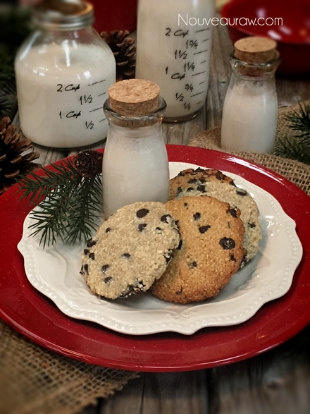
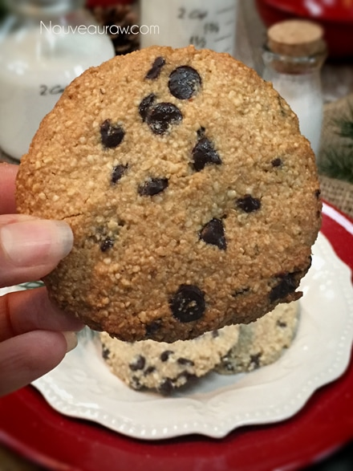

Chocolate Chip Cookies

~ raw, vegan, gluten-free ~
When I was a little girl my girlfriends and I would gather to make chocolate chip cookies, but needless to say, they never made it to the oven. I guess I was destined for “raw” long before I realized it.
It was nothing for us to polish off a batch of fresh raw cookie dough. So, in making these Chocolate Chip Cookies tonight, it threw me into my childhood memories.
They smell and taste just like that raw cookie dough! Right now, as I type these very words, the aroma emitting from the dehydrator fills the house with the smell of cookies in the oven, well dehydrator. Does it get any better than that?
You can use raw homemade chocolate chips or store-bought ones. This is a great chance to learn how to make your own raw chocolate chips if you haven’t tried them before. I provided a link below so you can learn all about it.
If you use raw, you will want to push them into the cookie tops once they come out of the dehydrator otherwise they will melt during the drying process.
If you use store-bought ones, they can be added right into the batter and then dehydrated. They will get soft but will firm up once the cookies cool down. These days, there are many different chocolate chips on the market. Gluten-free, dairy-free, soy-free, organic, fair-trade… you name it. Use whatever you feel comfortable with
This recipe makes a very quick and small amount. Sometimes we just don’t want to have a jar of cookies tempting us day after day. Well, unless your into that sort of thing. hehe Enjoy! Blessings, amie sue
P.S. I have included a baking option for those of you who don’t own a dehydrator. You are still light years ahead of purchasing commercially processed cookies. So I am proud of you for being here. I do recommend in time that you invest in one as it will open up a whole new culinary world to you. :) I highly recommend the 9 tray Excalibur dehydrator.
 Ingredients:
Ingredients:
Yields 4 (1/4 cup cookies)
Preparation:
- In the food processor, fitted with the “S” blade, combine the cashews, oats, and a pinch of salt together to make a powder.
- Be careful that you don’t overprocess the nuts or they will get too oily.
- Add sweetener and vanilla and blend until the dough starts to clump together, creating a ball.
- Transfer to a medium-sized bowl and add the chocolate chips and mix well.
- If you are a true chocolate lover… add the full 1/4 cup of chips, which I did. But you can always add less.
- Read above regarding the process of adding chocolate chips based on if raw or store-bought.
- Create small balls and flatten them, placing them on the mesh sheets of your dehydrator.
- Dehydrate at 145 degrees (F) for 1 hour, then reduce to 115 degrees (F) for about 8 hours.
- Store in an airtight container. I usually store mine in the fridge since they still contain some moisture.
- You can also freeze them. Just make sure that they are well sealed so they don’t absorb freezer odors. They should keep for about 3 months in the freezer.
Baking option:
- Preheat the oven to 350 degrees (F).
- Line a baking sheet with parchment paper and place the cookies at least 1” apart. These cookies won’t flatten while they cook, you will need to help them by slightly flattening them with your fingers.
- Bake for about 15 minutes. Often times ovens run at different temperatures regardless of what the dial says so please check in on the cookies about every 5 minutes for the first batch. Document the time it takes for the next tray or batch.
- When I baked a batch they did really well. They looked like the real deal and gave off a wonderful chocolate chip cookie aroma. They darken considerably compared to the raw blonde looking cookies.
The Institute of Culinary Ingredients™
- To learn more about maple syrup by clicking (here).
- What is Himalayan pink salt and does it really matter? Click (here) to read more about it.
- Are oats gluten-free? Yes, read more about that (here).
- Are oats raw? Yes, they can be found. Click (here) to learn more.
- Do I need to soak and dehydrate oats? Not required but recommended. Click (here) to see why.
Culinary Explanations:
- Why do I start the dehydrator at 145 degrees (F)? Click (here) to learn the reason behind this.
- When working with fresh ingredients it is important to taste test as you build a recipe. Learn why (here).
- Don’t own a dehydrator? Learn how to use your oven (here). I do however truly believe that it is a worthwhile investment. Click (here) to learn what I use.

This is what the cookie looked like baked Huge color difference.

© AmieSue.com